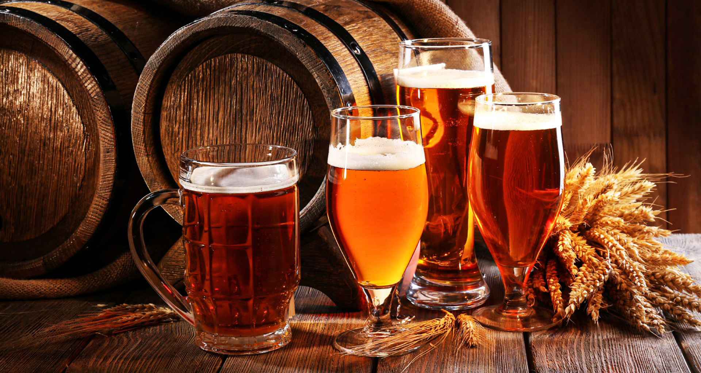
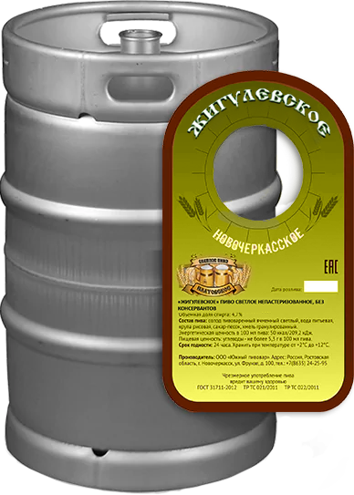
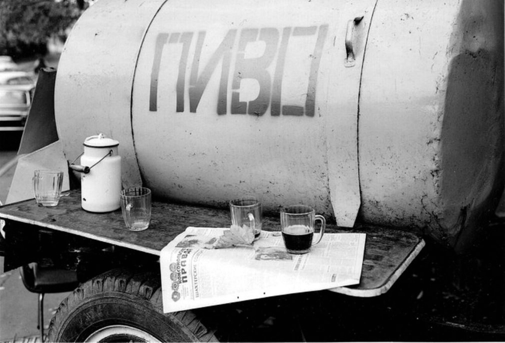

ВАРИМ ПИВО
С 1904 ГОДА
С 1904 ГОДА
О компании
Новочеркасский пивоваренный завод с 1904 года производит немецкое живое пиво по традиционному рецепту.
Пивзавод является архитектурным и культурным наследием города.
Ежегодная производительность завода — более 500 тысяч декалитров пива, которое реализуется в Новочеркасске и других городах и станицах области.
Пивзавод является архитектурным и культурным наследием города.
Ежегодная производительность завода — более 500 тысяч декалитров пива, которое реализуется в Новочеркасске и других городах и станицах области.
Наша продукция



История
Фирма «Братья О. и Г. Базенер» построила в Новочеркасске пивоваренный завод в 1904 году.
В 1916 году из-за гонений на немцев Герман Базенер эмигрировал в Персию, а завод во время гражданской войны был закрыт и национализирован.
В 1929-1941 годы завод служил пивной базой Ростовского пивоваренного завода «Заря».
В 1939 году власти решили восстановить завод. На его реконструкцию выделили более 2 миллионов рублей, но началась вторая мировая война.
В итоге пивоваренеый завода открылся в феврале 1946 года.
В 1916 году из-за гонений на немцев Герман Базенер эмигрировал в Персию, а завод во время гражданской войны был закрыт и национализирован.
В 1929-1941 годы завод служил пивной базой Ростовского пивоваренного завода «Заря».
В 1939 году власти решили восстановить завод. На его реконструкцию выделили более 2 миллионов рублей, но началась вторая мировая война.
В итоге пивоваренеый завода открылся в феврале 1946 года.
